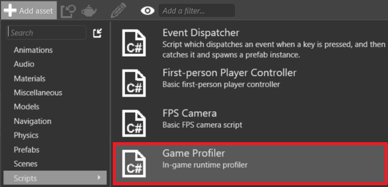
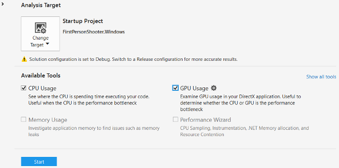

プロファイリング
初級 プログラマー
プロジェクトをプロファイリングして、実行時のパフォーマンスをチェックし、問題を発見できます。Stride のプロファイラーや、Visual Studio のパフォーマンス プロファイラーなどの外部プロファイリング ツールを使用できます。

Stride のプロファイル
Stride のプロファイラーは、実行時のパフォーマンス コストの変化を表示します。これは、ボトルネックを特定して根本原因を明らかにするのに役立ちます。
スクリプトをシーンに追加することによって、プロジェクトをプロファイリングできます。
- ［Asset view］で、
 をクリックして［Scripts］>［Game Profiler］を選択します。
をクリックして［Scripts］>［Game Profiler］を選択します。

［New script］ダイアログが開きます。既定の情報のままにします。

GameProfiler スクリプトがプロジェクトに追加されます。
スクリプトを保存するかどうかを確認するメッセージが表示されたら、［Save］をクリックします。
アセンブリを再ロードするかどうかを確認するメッセージが表示されたら、［Reload］をクリックします。
［Scene view］でエンティティを選択します。使用するエンティティはどれでもかまいません。
［Property grid］で、［Add component］をクリックし、GameProfiler を選択します(これは、ステップ 1 と 2 で追加したスクリプトです)。
コンポーネントとしてエンティティに GameProfiler スクリプトがアタッチされます。
プロジェクトをビルドして、アプリケーションを実行します。
実行時に左 Ctrl + 左 Shift + P キーを押してプロファイラーを起動します。

Note
プロファイラーが表示するデータの種類を変更できます。詳細については、Stride プロファイラー API のドキュメントを参照してください。
外部プロファイリング ツールを使用する
外部プロファイリング ツールを使用して、プロジェクトをプロファイリングできます。
| プロファイラー | 種類 | プラットフォーム |
|---|---|---|
| Visual Studio プロファイラー | Visual Studio の機能 | デスクトップとモバイル |
| Xamarin プロファイラー | Xamarin Studio で配布されるスタンドアロン ツール | モバイル |
| RenderDoc | スタンドアロン | デスクトップとモバイル |
Visual Studio プロファイラーを使用する
Visual Studio には、一般的なパフォーマンスの問題を識別できる強力な組み込みプロファイリング ツールがあります。
Visual Studio で、プロジェクト ソリューション (
.sln) ファイルを開きます。プロファイラーを開くには、Alt + F2 キーを押すか、タスク バーで［分析］>［パフォーマンス プロファイラー］をクリックします。

［プロファイラー］ウィンドウで、実行するプロファイリング ツールを選択します。

複数のプロファイリング ツールを同時に実行できます。
プロファイラーを起動するには、［パフォーマンス プロファイラー］タブの下部で、［開始］をクリックします。

Visual Studio がアプリケーションを実行して、プロファイリングを開始します。
Visual Studio プロファイラーの詳細については、MSDN のドキュメントを参照してください。
よくあるボトルネック
CPU と GPU は異なる種類のデータを処理するので、通常、ボトルネックの原因になっている部分を識別するのは簡単です。
GPU のほとんどの問題は、ポストエフェクト、ライティング、シャドウ、テッセレーションなど、処理量の多いレンダリング手法をアプリケーションが使用すると発生します。問題を識別するには、レンダリング機能を無効にします。
CPU のボトルネックであると思われる場合は、シーンの複雑さを減らします。
グラフィックスの場合:
- ゲームの解像度を下げます。
- ポストエフェクトの品質を下げます。
- ライトの数およびシャドウ マップのサイズを減らします。
- シャドウ マップのサイズを小さくします。
- カリング技法を使用して、レンダリングされるオブジェクトと頂点の数を減らします。
テクスチャの場合:
- 低速のデバイスでは圧縮されたテクスチャを使用します。
- 個別の画像ではなく、スプライト シートを使用します。
- 異なるテクスチャではなく、テクスチャ アトラスを使用します。